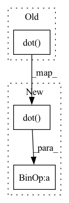

Pattern ID :34155
Before Change
def transform(pc, R, t):
return np.dot( pc, R.T) + t
def batch_transform(batch_pc, batch_R, batch_t):After Change
def transform(pc, R, t=None):
pc = np.dot( pc, R.T)
if t is not None:
pc = pc + t
return pc
In pattern: SUPERPATTERN
Frequency: 6
Non-data size: 3
Instances Fragment ID: 97594000
Project Name: zhulf0804/pcreg.pytorch
Commit Name: 5c4f707f2a7f9baeba222a299c310a3374181e3f
Time: 2020-11-27
Author: zhulf0804@gmail.com
File Name: utils/process.py
M Class Name: AnonimousClass
N Class Name: AnonimousClass
M Method Name: transform(3)
N Method Name: transform(3)
M Parent Class:
N Parent Class:
M File Name: utils/process.py
N File Name: utils/process.py
M Start Line: 66
M End Line: 66
N Start Line: 66
N End Line: 69
Before Change
A_proc, R_proc = lpcoeff(processed_speech_framed[ii, :], P)
numerators[ii] = A_proc.dot(toeplitz(R_clean).dot(A_proc.T))
denominators[ii] = A_clean.dot(toeplitz(R_clean).dot( A_clean.T) )
frac = numerators / denominators
frac[frac <= 0] = 1000After Change
A_proc, R_proc = lpcoeff(processed_speech_framed[ii, :], P)
numerators[ii] = A_proc.dot(toeplitz(R_clean).dot(A_proc.T))
denominators[ii] = A_clean.dot(toeplitz(R_clean).dot( A_clean.T) ) + eps
frac = numerators / denominators
frac[frac <= 0] = 1000 Fragment ID: 97594020
Project Name: rikorose/deepfilternet
Commit Name: fa36528bb4683d4dd2250351cf4ff01bb46fee03
Time: 2022-04-12
Author: h.schroeter@pm.me
File Name: DeepFilterNet/df/sepm.py
M Class Name: AnonimousClass
N Class Name: AnonimousClass
M Method Name: llr(5)
N Method Name: llr(5)
M Parent Class:
N Parent Class:
M File Name: DeepFilterNet/df/sepm.py
N File Name: DeepFilterNet/df/sepm.py
M Start Line: 259
M End Line: 266
N Start Line: 242
N End Line: 269
Before Change
:param y_mat: np.ndarray with ndim=2
:return: np.ndarray with ndim=2
return 1 - np.dot( x_mat, y_mat.T) / np.outer(
np.linalg.norm(x_mat, axis=1), np.linalg.norm(y_mat, axis=1)
)
After Change
:return: np.ndarray with ndim=2
return 1 - np.clip(
(np.dot( x_mat, y_mat.T) + eps)
/ (
np.outer(np.linalg.norm(x_mat, axis=1), np.linalg.norm(y_mat, axis=1)) + eps
), Fragment ID: 97594007
Project Name: jina-ai/jina
Commit Name: 4c4f69b150bc1f7103f31aea8ceade1f36081a7e
Time: 2021-08-16
Author: artex.xh@gmail.com
File Name: jina/math/distance.py
M Class Name: AnonimousClass
N Class Name: AnonimousClass
M Method Name: cosine(3)
N Method Name: cosine(2)
M Parent Class:
N Parent Class:
M File Name: jina/math/distance.py
N File Name: jina/math/distance.py
M Start Line: 76
M End Line: 78
N Start Line: 70
N End Line: 84
Before Change
R = np.r_[R1, R2]
D1 = np.c_[np.dot(self.K1, self.K1) + self.reg * I, Z]
D2 = np.c_[Z, np.dot( self.K2, self.K2) + self.reg * I]
D = 0.5 * np.r_[D1, D2]
// http://www.squobble.com/academic/kcca_wiener/node4.html
return R, DAfter Change
R = np.r_[R1, R2]
D1 = np.c_[(1-self.c)*np.dot(self.K1, self.K1) + self.c * I, Z]
D2 = np.c_[Z, (1-self.c)*np.dot(self.K2, self.K2) + self.c * I]
D = 0.5 * np.r_[D1, D2]
return R, D
Fragment ID: 97594006
Project Name: jameschapman19/cca_zoo
Commit Name: 4ec7c98b7e869f80e9bd9cbe3253f0a6d0b12dda
Time: 2020-10-22
Author: james.chapman.19@ucl.ac.uk
File Name: cca_zoo/KCCA.py
M Class Name: KCCA
N Class Name: KCCA
M Method Name: hardoon_method(1)
N Method Name: hardoon_method(1)
M Parent Class:
N Parent Class:
M File Name: cca_zoo/KCCA.py
N File Name: cca_zoo/KCCA.py
M Start Line: 60
M End Line: 68
N Start Line: 60
N End Line: 68
Before Change
x = x.reshape(shape=(-1, self.num_heads * self.head_size))
// run multi head attention (bs, T, num_heads, head_size)
query, key, value = [x.dot( y) \
.reshape(shape=(bs, -1, self.num_heads, self.head_size)) \
for y in [self.query_dense, self.key_dense, self.value_dense]]
After Change
x = inputs + attention.reshape(shape=(-1, self.num_heads * self.head_size)).dot(self.final)
print(x.shape)
// layernorm
x = x + x.dot( self.ff1) .relu().dot(self.ff2)
print(x.shape)
// layernorm
return x.reshape(shape=(bs, -1, self.num_heads * self.head_size)) Fragment ID: 97594024
Project Name: geohot/tinygrad
Commit Name: a361ef6861ead653fd014b395119e306d06cc7ba
Time: 2020-12-27
Author: geohot@gmail.com
File Name: examples/transformer.py
M Class Name: TransformerBlock
N Class Name: TransformerBlock
M Method Name: __call__(2)
N Method Name: __call__(2)
M Parent Class:
N Parent Class:
M File Name: examples/transformer.py
N File Name: examples/transformer.py
M Start Line: 42
M End Line: 54
N Start Line: 46
N End Line: 66
Before Change
nddss = []
ndcss = []
nf = ds_orig.nfeatures
ds_orig_Rref = np.dot( ds_orig.samples, Rs[ref_ds])
zscore(ds_orig_Rref, chunks_attr=None)
for ds_back in dss_clean_back:
ndcs = np.diag(np.corrcoef(ds_back.samples.T[:nf, ],
ds_orig_Rref.T)[nf:, :nf], k=0)After Change
nddss = []
ndcss = []
nf = ds_orig.nfeatures
ds_orig_Rref = np.dot( ds_orig.samples, Rs[ref_ds]) * np.sign(dss_rotated_clean[ref_ds].a.random_scale)
zscore(ds_orig_Rref, chunks_attr=None)
for ds_back in dss_clean_back:
ndcs = np.diag(np.corrcoef(ds_back.samples.T[:nf, ], Fragment ID: 97594012
Project Name: PyMVPA/PyMVPA
Commit Name: 5d9fa57fe8ed36a394291ca482eecaa0a958acb4
Time: 2016-03-10
Author: swaroopgj@gmail.com
File Name: mvpa2/tests/test_searchlight_hyperalignment.py
M Class Name: SearchlightHyperalignmentTests
N Class Name: SearchlightHyperalignmentTests
M Method Name: test_hyperalignment_measure(1)
N Method Name: test_hyperalignment_measure(1)
M Parent Class: unittest.TestCase
N Parent Class: unittest.TestCase
M File Name: mvpa2/tests/test_searchlight_hyperalignment.py
N File Name: mvpa2/tests/test_searchlight_hyperalignment.py
M Start Line: 104
M End Line: 104
N Start Line: 74
N End Line: 104